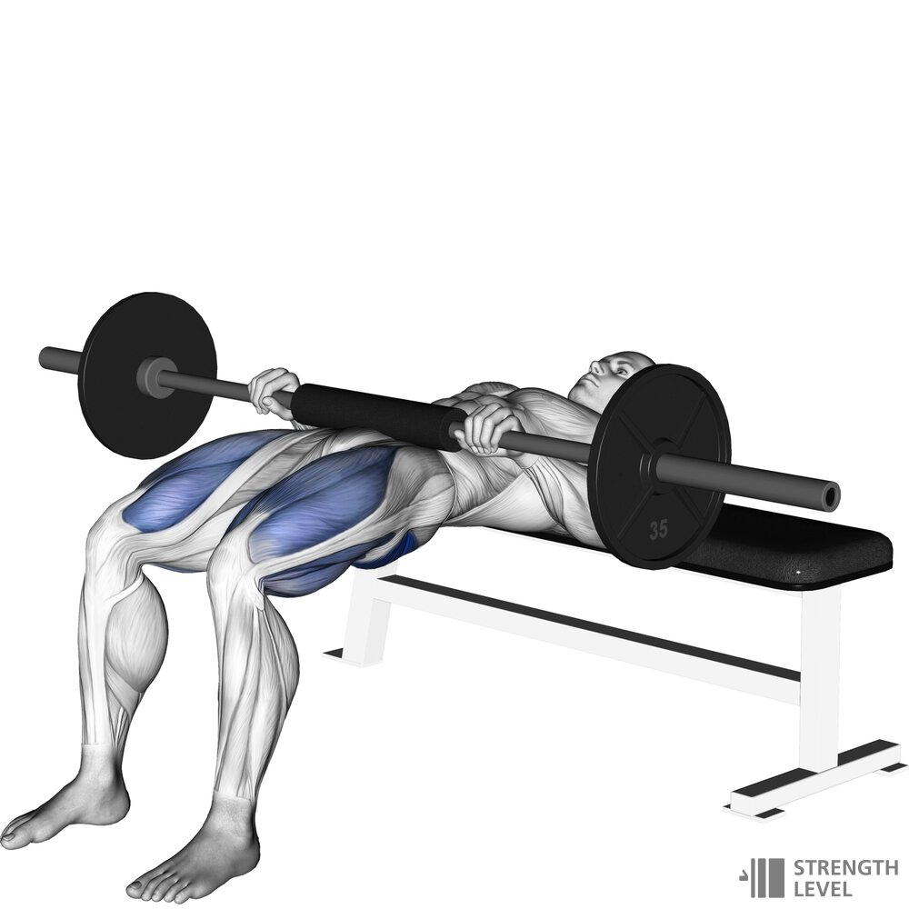

1.Pchnięcia bioder

1.Wrap a cushion around the middle of the barbell
2.Lie back on the side of a bench
3.Place the barbell above your hips
4.Keep your chin tucked and focus on one spot
5.Drive from the glutes until your shoulders form a line parallel to the ground with your knees
6.Return your hips to the ground